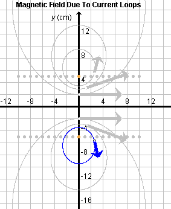
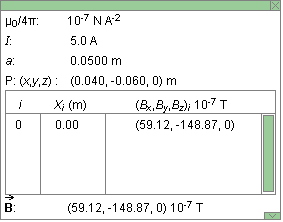
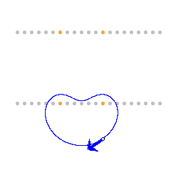
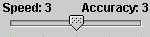

Instructions
This page is designed to get you started using the applet. The applet should be open. The step-by-step instructions on this page are to be done in the applet. You may need to toggle back and forth between instructions and applet if your screen space is limited.
 Magnetic Field Due To Current In A Circular Loop
Magnetic Field Due To Current In A Circular Loop
 Magnetic Field Due To Currents In
Several Coaxial Loops
Magnetic Field Due To Currents In
Several Coaxial Loops
 Calculation Speed Vs. Calculation Accuracy
Calculation Speed Vs. Calculation Accuracy

Exercise 1. RESET  the applet.
the applet.
Select the Loops button . Click on the loop in the center of the
series of coaxial loops, Loop 0. To help you in selecting the
right loop, you can either display the Grid  or display
the Data box
or display
the Data box  and check the x-coordinate of the loop you
have selected. If you have selected the wrong loop, deselect it
by clicking on the selected loop and click on another loop.
and check the x-coordinate of the loop you
have selected. If you have selected the wrong loop, deselect it
by clicking on the selected loop and click on another loop.
Set the Scale slider to 100 and the current to 5.0 A. Make
sure the Vector button is selected. Drag the field point
to (x,y,z) = (0, -2.0, 0) cm (using the
Grid and Data box as guides), and select the Field Line
button  . The field line through the field point will be
drawn in blue. Click on several more field points, and have
the applet draw the field lines through these points. Only
the last field line drawn will be shown in blue, the others
in grey. If you clicked at the field points at the locations
of the tail ends of the arrows shown in Figure 1 below, you
should see a pattern of field lines like that in Figure 1.
The arrows represent the field vectors at the selected field
points.
. The field line through the field point will be
drawn in blue. Click on several more field points, and have
the applet draw the field lines through these points. Only
the last field line drawn will be shown in blue, the others
in grey. If you clicked at the field points at the locations
of the tail ends of the arrows shown in Figure 1 below, you
should see a pattern of field lines like that in Figure 1.
The arrows represent the field vectors at the selected field
points.

Figure 1
Exercise 2. Continuing from Exercise 1, drag the field point to (x,y,z) = (0.040, -0.060, 0) m. If the Field Line button is still selected, the field line will be dragged along, but it may take a second or two because of the large number of calculations required to draw a field line in this applet.
Display the Data box, and drag the box so that all of it can be seen, as in Figure 2 below.

Figure 2
Note the insert in the Data box with detailed information about the selected loop: its label, i = 0, the location of its center point, Xi = 0, and the x,y,z components of the magnetic field vector at the field point due to the current in the loop, (Bx,By,Bz)i = (59.12, -148.87, 0)×10-7 T.
Below this insert, the total magnetic field vector  at the given
field point, B = (59.12, -148.87, 0)×10-7 T,
is listed. It is equal to the field vector due to Segment 0
in this case, because only this one segment is selected.
at the given
field point, B = (59.12, -148.87, 0)×10-7 T,
is listed. It is equal to the field vector due to Segment 0
in this case, because only this one segment is selected.
Exercise 3. Continuing from Exercise 2, without making any other changes in the applet's settings, vary the current I by means of the slider. As I increases, the length of the arrows representing field vectors should increase. Also choose some negative values for I. The field arrows should reverse direction.
Exercise 4. Continuing from Exercise 3, drag the field point along its field line. Make sure the Field Line button is still selected. Observe that the field vector always remains tangential to the field line. Note that the field line gets redrawn as you move the field point. This may take a second or two.

Exercise 1. RESET the applet.
Select the Loops button . Select two loops, Loop -4 at x = -0.04 m and Loop 2 at x = 0.02 m. Drag the field point to (x,y,z) = (2.0, -10.0, 0) cm and let the applet draw the field line through this point. Set the Vector Length scale to 400. The field line and field vector should look like that in Figure 3 below.

Figure 3
Now deselect Loop 2 and, without moving the field point, let the applet draw the field line again. Observe the change. Then re-select Loop 2 and let the applet draw the field line through the field point once more. The image in Figure 3 should be restored.
Exercise 2. Get the numerical values of the two field
vectors due to Loops -4 and 2 from the Data box. Do the two
vectors add up to the total magnetic field vector listed
at the bottom of the Data box?
Exercise 1. RESET the applet. The Loops button should not
be selected. In this case, the applet calculates and displays
the total magnetic field due to current in all twenty-one loops.
(One can achieve the same by selecting the Segments button and
then selecting all loops. In the latter case, the Data box will
display information about the individual loops. In the former,
it will not.)
Move the Speed/Accuracy Slider  all the way to the left, so that the calculation speed has its maximum possible value of 5 and the calculation accuracy its minimum possible value of 1. Move the field point to (x,y,z) = (0, -14.0, 0) cm or close to this point. (Let the Grid and Data box guide you in setting the point.) You may want to choose a scale setting of around 200 to get a reasonable length for the field arrow.
Let the applet draw the field line through the given point. You will find that the line does not close. The reason is that, at the lowest accuracy setting of the Speed/Accuracy slider, the calculation is not accurate enough for this particular field point. As soon as you select the Field Line button and the field line is being calculated and drawn, the Stop button becomes active. Click this button to halt the calculation when the field line has missed the original field point.
Move the tab of the Speed/Accuracy slider all the way to the right, so that the calculation sppeed has its minimum setting of 1 and the calculation accuracy its maximum setting of 5. Deselect the Field Line button and select it again. The field line through the given field point at (x,y,z) = (0, -14.0, 0) cm will be redrawn. Be patient! It may take a minute or longer, depending on the speed of your computer, but the line will close and the calculation will stop by itself. As soon as the calculation stops, the Stop button becomes inactive.